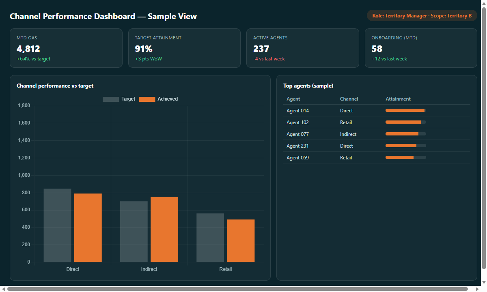
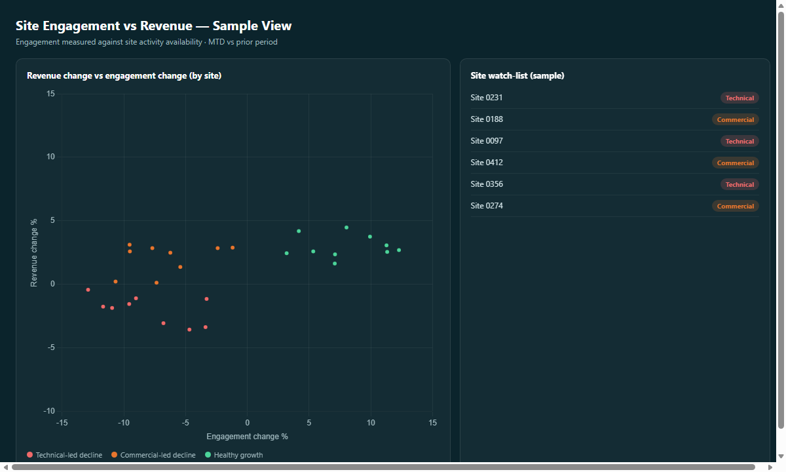
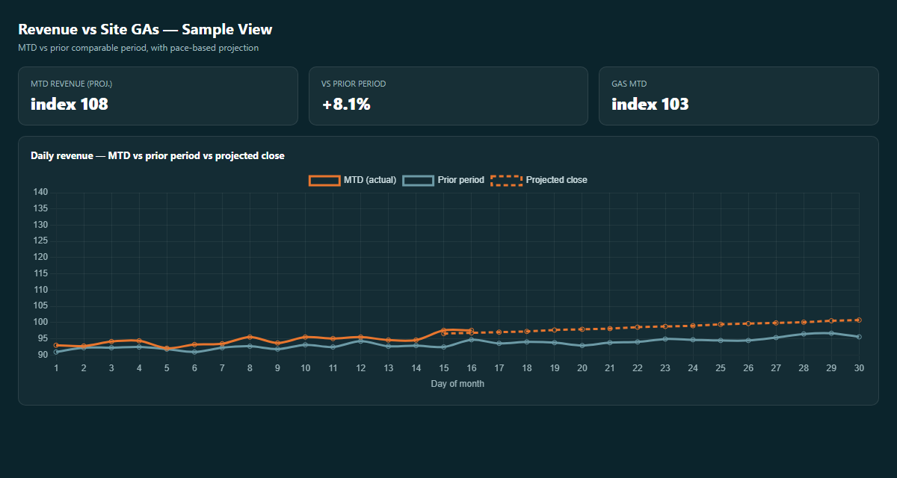
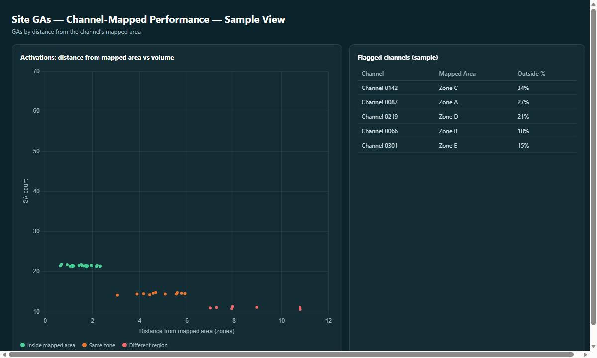
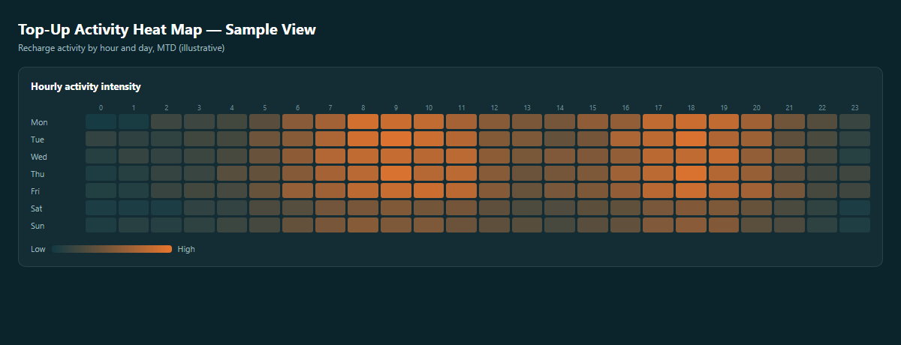

Consumer Analytics · Business Intelligence · Revenue Reporting · Workflow Automation
Hi, I'm Duke Misati
I like making sense of things. Data just happens to be one of the best ways to do it.
About
My journey into data analytics started from the sales side of a telecommunications company — working on airtime and gross-adds performance, policies, reports, and the day-to-day problems that come with managing real operational data.
Over time, I became increasingly interested in what sits behind those numbers. What drives performance? Where are processes falling short? Which patterns are easy to miss? And most importantly, how can data help someone make a better decision?
That curiosity led me into advanced Excel, Power BI, SQL, Tableau, and automation tools like Power Automate and n8n — where I now build dashboards, analyze datasets, automate reporting, and turn complex information into something people can actually use.
I believe the best analytical work isn't the most complicated — it's the work that makes a hard question easier to answer. I'm building my career around one idea: turning data into something useful.
What I Do
Revenue & Performance Reporting
Subscriber and revenue tracking, ARPU and yield analysis, and MoM/DoD trend reporting — turning raw operational data into executive-ready insight.
Dashboard Development
Interactive dashboards in Power BI, Tableau, Metabase, and custom web-based builds that let stakeholders monitor KPIs and drill down from national to site level.
Data Analysis & Diagnostics
Root-cause analysis on performance gaps — separating commercial drivers from technical ones, and flagging where a process or a territory is breaking down.
Workflow Automation
Automated recurring reporting and scorecards using Power Automate and n8n, cutting manual compilation time and getting insight to stakeholders faster.
My Resume
Download my resume for a full summary of my experience, education, and technical background.
Portfolio
A selection of analytics and dashboard projects from my work in telecom consumer analytics. To protect confidential company and customer data, these are written up as case studies describing the problem, my approach, and the outcome — without exposing the underlying data.
Channel Performance Dashboard APP
A consolidated view of sales-channel performance against targets from site level up to agent level, replacing scattered daily and weekly report templates.
SQLHTML/JS DashboardExcelInteractive Charts
Channel Performance Dashboard APP
A consolidated view of sales-channel performance against targets from site level up to agent level, replacing scattered daily and weekly report templates.
SQLHTML/JS DashboardExcelInteractive Charts
Screenshot shown with fully synthetic sample data — no real company figures.
The problem: Leadership needed one place to see how each sales channel (Direct, Indirect, Retail) was tracking against target — from the site level all the way up to the individual agent — but the data lived across separate daily and weekly report templates, making it slow to spot underperformance.
What I did: Consolidated the source data with SQL and Excel and built an interactive HTML dashboard app tracking day-on-day activations, MTD performance by territory, and onboarding progress in a single view. Access is password-protected and role-based, so each user only sees the reports within their own scope.
Outcome: Gave regional, territory, zonal, and cluster-level users a same-day read on performance within their own scope instead of waiting on manually compiled weekly reports, surfacing underperforming channels sooner.
Site Engagement vs Revenue Dashboard
A diagnostic tool separating technical (engagement) drivers of revenue change from commercial (yield) drivers, at site level.
SQLData DiagnosticsInteractive Charts
Site Engagement vs Revenue Dashboard
A diagnostic tool separating technical (engagement) drivers of revenue change from commercial (yield) drivers, at site level.
SQLData DiagnosticsInteractive Charts
Screenshot shown with fully synthetic sample data — no real company figures.
The problem: When a site's revenue dropped, it wasn't always clear whether the cause was technical (poor network/site engagement) or commercial (pricing, yield). Diagnosing this manually, site by site, was slow.
What I did: Built a dashboard correlating site/cell-tech engagement — measured against site activity availability — with revenue change, auto-classifying each site's likely driver and surfacing a prioritized watch-list of sites to act on. Also profiled using area maps and Pareto charts to quickly point out whether a site's effect was commercial or technical.
Outcome: Cut the triage time for "why is this site's revenue down" from a manual deep-dive to an instant flag, letting teams focus recovery effort where it mattered most.
Revenue vs Site GAs Dashboard
A month-to-date performance tracker comparing revenue and gross-adds against the prior comparable period.
SQLHTML/JS Dashboard
Revenue vs Site GAs Dashboard
A month-to-date performance tracker comparing revenue and gross-adds against the prior comparable period.
SQLHTML/JS Dashboard
Screenshot shown with fully synthetic sample data — no real company figures.
The problem: Month-end closing reports caught underperformance too late to act on it within the month.
What I did: Built a dashboard comparing month-to-date revenue and gross-adds against the prior same-length period, broken down to site level, with a projection of the closing figure based on pace vs. target, day on day.
Outcome: Gave an early, same-period read on trend direction, so teams could course-correct before the month closed instead of after.
Site GAs — Channel-Mapped Performance
A territory-integrity check flagging sales channels activating outside their assigned coverage area.
SQLGeographic Analysis
Site GAs — Channel-Mapped Performance
A territory-integrity check flagging sales channels activating outside their assigned coverage area.
SQLGeographic Analysis
Screenshot shown with fully synthetic sample data — no real company figures.
The problem: Sales channels are each mapped to a specific territory, but some activations were happening outside a channel's assigned area — diluting attribution and distorting territory planning.
What I did: Built a dashboard that flags activations outside a channel's mapped locality, measures how far outside (same zone vs. different region), and reconciles the discrepancy through a territory matrix.
Outcome: Gave territory managers a direct way to spot and correct mapping breaches instead of discovering them anecdotally.
Top-Up Activity Heat Map & Trend Analysis
A Power BI heat-map view of recharge activity by hour, day, and channel, used to pinpoint peak and low periods.
Power BIDAXSQL
Top-Up Activity Heat Map & Trend Analysis
A Power BI heat-map view of recharge activity by hour, day, and channel, used to pinpoint peak and low periods.
Power BIDAXSQL
Screenshot shown with fully synthetic sample data — no real company figures.
The problem: Top-up recharge activity varies heavily by hour, day, and channel, but without a clear view of when and where it concentrates, it's hard to time promotions or spot a channel quietly losing activity.
What I did: Built a set of Power BI heat maps and an hourly trend view across recharge channels, comparing activity patterns month-to-date to surface peak and low hours at a glance.
Outcome: Gave a fast, visual read on when activity peaks and dips per channel, informing the timing of recovery and promotional actions instead of relying on gut feel.
Consumer Business Unit Performance Dashboard
A rolling Excel dashboard tracking consumer business performance with zonal and site-level drill-down, built up month-on-month over two years.
ExcelPower QueryDashboard Development
Consumer Business Unit Performance Dashboard
A rolling Excel dashboard tracking consumer business performance with zonal and site-level drill-down, built up month-on-month over two years.
ExcelPower QueryDashboard DevelopmentThe problem: Monthly performance data was being produced fresh each month with no easy way to compare trends across months or drill from a national view down to a zone or site.
What I did: Built an Excel workbook with a central calculated dashboard sitting on top of monthly performance sheets, letting any month's figures be drilled into by zone and site using formulas and structured calculations, extended consistently as each new month's data came in.
Outcome: Gave a single file that leadership could open to see current performance alongside the full historical trend, with drill-down to the site responsible for a change, instead of digging through separate monthly reports.
Referral Workflow Automation (Power Automate)
An end-to-end Microsoft 365 workflow automating referral intake, duplicate checks, expiry, and conversion tracking for a field sales program.
Power AutomateSharePoint ListsMicrosoft FormsMicrosoft Teams
Referral Workflow Automation (Power Automate)
An end-to-end Microsoft 365 workflow automating referral intake, duplicate checks, expiry, and conversion tracking for a field sales program.
Power AutomateSharePoint ListsMicrosoft FormsMicrosoft TeamsThe problem: Field agents submitted referrals manually, with no consistent way to catch duplicate submissions, track how long a referral had been open, confirm when it converted into a sale, or notify the right shop manager — all of which took manual follow-up.
What I did: Designed and built the end-to-end flow on Microsoft 365: agents submit through a Microsoft Form, which lands in a SharePoint-based Referral Registry linked to a Shop Master List and Agent Registry. Power Automate flows handle the logic — flagging duplicate submissions by matching customer phone number within a 7-day active window, auto-expiring unconverted referrals on a calendar-day timer, matching conversions back to the original referral by phone and shop, and routing notifications to the right people in a dedicated Teams channel, tagged per shop manager. Access is role-based: admins and reporting see everything, shop managers see only their own shop, and agents only interact through the form, with no list access and no edits once a referral is submitted.
Outcome: Replaced a manual, error-prone referral process with a self-service flow that catches duplicates and expiries automatically and routes the right notification to the right person — freeing up time previously spent on manual tracking and follow-up.
Tools I Use
Let's make something useful.
Have a dataset, dashboard, or business question that needs a clearer answer? Reach out.
- Emaildukemisati@gmail.com
- Phone+254 723 059 159
- LocationNairobi, Kenya